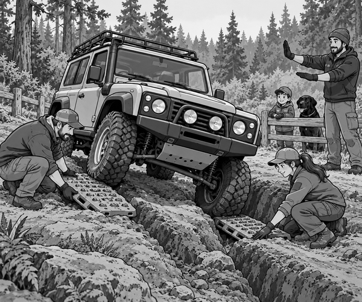

FICTION
Tom heard an engine growl in the forest.
Then it stopped.
He and Dad were visiting a 4x4 training course.
Scout waited beside them on his lead.
They walked to the wooden safety barrier.
Ranger Mia's 4x4 stood across two deep ruts.
Its front left wheel was high.
Its rear right wheel was high too.
The other two wheels pressed hard against the ground.
Mia tried a tiny touch of power.
The high wheels turned.
The 4x4 did not move.
She stopped at once.
“That is strange,” Tom said.
“Four tyres are touching the trail.”
Dad pointed to the high wheels.
“They touch, but they have very little weight on them.”
“That means they have very little grip.”
4x4 fact: Deep crossed ruts can lift two opposite wheels. This is called a cross-axle trap.
Ranger Mia switched off the engine.
Dad checked that the vehicle was secure.
No one went underneath it.
Tom and Scout stayed behind the barrier.
Mia and Dad studied the ruts.
The front gap was wide but not deep.
The rear gap was narrow and deeper.
“We need to give those tyres something firm to climb,” Mia said.
She brought two broad traction ramps.
Dad placed one in the front rut.
Mia placed the other in the rear rut.
The ramps filled the empty spaces.
Now the high tyres could press against something solid.
Dad and Mia stepped well away.
A trained spotter stood where Mia could see him.
He held both hands up.
Mia started the engine.
The spotter lowered one hand slowly.
Mia selected her lowest gear.
She let the 4x4 creep forwards.
The front tyre pressed onto its ramp.
The rear tyre did the same.
The ramps stayed firm.
The two low wheels began to climb.
The 4x4 rocked gently.
Then all four tyres carried weight again.
The spotter closed both fists.
Mia stopped on flat ground.
Grip fact: Spinning a lightly loaded tyre can dig the rut deeper. Slow movement and a firm ramp can give the tyre useful grip.
Only then did Dad collect the ramps.
Mia checked beneath the 4x4.
Nothing was bent or leaking.
Tom looked back at the crossed ruts.
“The engine was strong,” he said.
“But strength was not the answer.”
Dad smiled.
“Grip and a calm plan were the answer.”
Scout gave one happy bark.
The two-wheel trap was beaten.
1. Why could Mia's 4x4 not move?
2. Where did Tom and Scout wait?
3. What filled the gaps below the tyres?